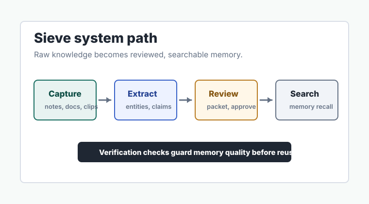
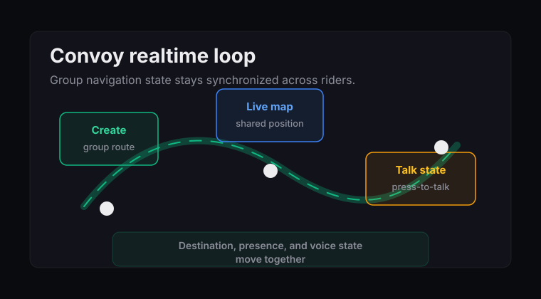

Sieve
AI knowledge and memory workspace
Captures rough knowledge, extracts structured context with AI, assembles review packets, and makes approved memory searchable with citations.
Open case studyAvailable for opportunities
AI systems, data pipelines, and realtime mobile products — from architecture diagram to working prototype.
Featured Projects

AI knowledge and memory workspace
Captures rough knowledge, extracts structured context with AI, assembles review packets, and makes approved memory searchable with citations.
Open case study
Realtime iOS group navigation
Private group sessions with shared map state, route and ETA context, press-to-talk voice, and clear stop-sharing controls for people driving together.
Open case studyHow I Build
Start with data models, API contracts, and system boundaries before writing UI code. The architecture diagram is the first deliverable.
Every system claim has a test, contract check, or explicit verification note. Rough edges are documented, not hidden.
Shipping means choosing constraints. I document what's deferred, what's rough, and why — so technical reviewers see judgment, not just features.